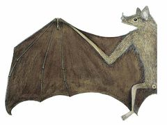
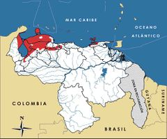

Leptonycteris curasoae
| Murciélago cardonero | |
|---|---|
|  | |
| Riesgo de extinción | |
 Vulnerable (UICN) | |
| Clasificación científica | |
| Reino: | Animalia |
| Filo: | Chordata |
| Clase: | Mammalia |
| Orden: | Chiroptera |
| Familia: | Phyllostomidae |
| Género: | Leptonycteris |
| Especie: | Leptonycteris curasoae |
| Nombre binomial | |
|
Leptonycteris curasoae Miller, 1900 | |
| Distribución | |
|
 Mapa de distribución de Leptonycteris curasoae | |
Contenido
Información de Evaluación
- Categoría y Criterio Regional: Vulnerable A2c
- Fecha de Evaluación Regional: 2015
- Evaluadores: Jesús Morales-Campos y Ariany García-Rawlins
- Categoría y Criterio Global: Vulnerable A2c
Justificación
Evaluaciones Previas
1999: Vulnerable (VU)
2008: Vulnerable (VU)
Información General
Nombres comunes
Murciélago cardonero, murciélago longirrostro mayor, hocicudo de Curazao, southern longnosed bat, Curaçaoan long-nosed bat.
Notas taxonómicas
Sinónimos
Descripción
Es la especie más grande del grupo de los murciélagos de rostro largo, mide entre 7,9 y 9,3 cm. Llega a pesar entre 21 y 28 g. Presenta una coloración parda oscura en la cabeza y el dorso, con el vientre pardo grisáceo uniforme. Sus orejas son muy pequeñas y tiene una cola diminuta. Los individuos machos adultos pueden desarrollar un parche de olor en la región interescapular, el cual está asociado a la selección de pareja durante el período de apareamiento (Nassar et al. 2008, Muñoz-Romo y Kunz 2009). Por su comportamiento gregario puede formar colonias de varios miles y decenas de miles de individuos (Linares 1987, Linares 1998, Cole y Wilson 2006). Dados sus hábitos nectarívoros, polinívoros y frugívoros, es una especie clave para el mantenimiento de los ecosistemas terrestres donde se distribuye, debido a su función como agente polinizador y dispersor de semillas de larga distancia de cactáceas columnares y agaves quiropterófilos, que a su vez representan su principal alimento (Nassar et al. 1997, Soriano y Ruiz 2002).
Distribución
Especie asociada a ambientes áridos y semiáridos del norte de Suramérica. Presenta una distribución geográfica amplia que abarca las regiones áridas y semiáridas de Colombia y Venezuela, incluyendo las islas próximas como Aruba, Curazao y Bonaire (Eisenberg 1989, Fleming y Nassar 2002, Cole y Wilson 2006). En nuestro país se distribuye en el Sistema Coriano, península de Paraguaná, lago de Maracaibo, península Guajira, cordillera Central, cordillera Oriental, península de Araya y en la isla de Margarita, extendiéndose hacia el sur a través de la depresión árida del estado Lara y de los enclaves áridos de los Andes venezolanos, hasta la frontera con Colombia en Ureña, entre 0 y 900 m de altura (Eisenberg 1989, Fleming y Nassar 2002, Cole y Wilson 2006). Los hábitats que más frecuenta son los cardonales, espinares y cujisales, aunque también se le puede encontrar con menor frecuencia en bosques secos (Eisenberg 1989, Fleming y Nassar 2002, Cole y Wilson 2006).
- Sistema: Terrestre
- Bioregión:
- Intervalo altitudinal (m): 0-900
- Endémica: No
Situación
Según reportes, en cuevas de la península de Paraguaná y en enclaves áridos andinos, sus poblaciones fluctúan localmente en abundancia a lo largo del tiempo, y desaparecen de ciertas localidades en épocas en que escasea el alimento (Martino et al. 1998, Soriano et al. 2000, García-Rawlins 2011). Esto sugiere que L. curasoae es un murciélago con potencial para realizar movimientos de larga distancia y posibles migraciones, fenómeno demostrado para la especie hermana mexicana, Leptonycteris yerbabuenae (Cockrum 1991, Wilkinson y Fleming 1996). Evidencias genéticas con base en el análisis de ADN mitocondrial indican que la especie ha mantenido un flujo genético histórico en las poblaciones de Venezuela, lo que sugiere capacidad para movimientos de larga distancia (Newton et al. 2003). Gracias a un programa de marcado y recaptura mantenido en las islas ABC (Aruba, Bonaire y Curazao) desde 2009, se logró demostrar que vuela entre las islas holandesas (Aruba, Curazao y Bonaire) y entre éstas y tierra firme (Simal et al. 2015). A escala internacional la IUCN le clasifica como Vulnerable (IUCN 2014).
- EOO (km2): Temporalmente sin información
- AOO (km2): Temporalmente sin información
- Tendencia Poblacional: Decreciendo
Amenazas
Los ambientes que utiliza L. curasoae se encuentran entre los más amenazados del país y son considerados con alta prioridad regional para su conservación en Suramérica y el Caribe (Dinerstein et al. 1995). Los factores que de manera combinada constituyen amenazas contra esta especie (Molinari et al. 2012) son: 1) uso de ambientes amenazados, debido a la alta tasa de conversión de la tierra para desarrollo de complejos urbanos y vialidad y falta de protección legal de las zonas áridas y semiáridas del país, 2) hábitos gregarios, lo que hace a las colonias fácilmente ubicables y susceptibles de ser destruidas al ser confundidas con murciélagos hematófagos, 3) dependencia obligada de especies de plantas que no cuentan con ningún tipo de protección legal y son fácilmente eliminadas para el desarrollo de cultivos, y 4) dependencia obligada de cuevas como refugios diurnos y refugios de maternidad, que son muy reducidas en número en las zonas áridas de Venezuela, y al estar desprotegidas, las crías de L. curasoae pueden ser presa fácil del vandalismo.
Conservación
A escala internacional se ha propuesto su inclusión en el Apéndice I de la Convención sobre el comercio internacional de especies amenazadas de fauna y flora silvestres. Su superficie de distribución geográfica en Venezuela abarca pocas áreas protegidas, pero se desconoce la efectividad de las mismas para la protección de L. curasoae. Se han desarrollado iniciativas para la protección del sistema de cuevas de la península de Paraguaná, Falcón, lográndose en el año 2008 la declaratoria del primer Santuario de Fauna Silvestre de Venezuela (decreto Nº 6138 del 3 de junio de 2008) (Delfín et al. 2011). Este santuario abarca las cuevas Jacuque, El Pico, Piedra Honda y El Guano (municipios Falcón y Los Taques), tres de ellas usadas como refugio por este mamífero. Entre los años 2012 y 2013, el Programa para la Conservación de los Murciélagos de Venezuela (PCMV), afiliado a la Red Latinoamericana para la Conservación de los Murciélagos (Relcom), propuso a la mesa directiva de esta red la designación de dos Áreas Importantes para la Conservación de los Murciélagos (Aicoms): una en la península de Macanao, Nueva Esparta, y otra en la península de Paraguaná, Falcón. La primera incluye tres cuevas usadas por L. curasoae: Piedra de Rivero, Piedra de Quintín y Cueva de Los Murciélagos. La segunda comprende las cuatro cuevas del Santuario de Fauna de la Península de Paraguaná. Algunas acciones de conservación que se recomiendan para L. curasoae son: 1) intensificar la investigación para identificar cuevas usadas por la especie en las zonas áridas y semiáridas del país, 2) desarrollar planes de guardería de dichos refugios, 3) restringir el acceso a las cuevas más vulnerables mediante rejas que sean manejadas por las autoridades regionales encargadas del medio ambiente, 4) construcción de cuevas artificiales dentro de áreas protegidas o privadas para incrementar el número de refugios disponibles para la especie.
Autorías
Autores originales
Jafet M. Nassar
Colaboradores
Ilustrador
Josu Calvo
Referencias
- Cole, F. R. y Wilson, D. E. (2006). Leptonycteris curasoae. Mammalian Species 796: 1-3.
- Delfín, P., Ochoa, Y. y Castillo, A. (2011). Santuario de Fauna Silvestre Cuevas de Paraguaná, Venezuela: Lineamientos técnicos para su diseño. Terra 27(41): 13-45.
- Dinerstein, E., Olson, D. M., Graham, D. J., Webster, A. L., Primm, S. A., Bookbinder, M. P. y Ledec, G. (1995). Una Evaluación del Estado de Conservación de las Eco-regiones Terrestres de América Latina y el Caribe. Banco Mundial. Washington DC, US
- Eisenberg, J. F. (1989). Mammals of the Neotropics. The Northern Neotropics (Vol. 1). Panamá, Colombia, Venezuela, Guyana, Suriname, French Guiana. University of Chicago Press. Chicago y Londres. 449 pp.
- Fleming, T. H. y Nassar, J. M. (2002). Population biology of the lesser long-nosed bat Leptonycteris curasoae, in Mexico and northern South America. Páginas: 283-305. En: Fleming, T. H. y Valient-Banuet, A. (Eds.). Columnar cacti and their mutualists: evolution, ecology and conservation. University of Arizona Press. Tucson.
- Linares, O. J. (1987). Murciélagos de Venezuela. Cuadernos Lagoven. Caracas. 120 pp.
- Linares, O. J. (1998). Mamíferos de Venezuela. Sociedad conservacionista Audubon. Caracas. 691 pp.
- Molinari, J., Nassar, J. M., García-Rawlins, A. y Márquez, R. J. (2012). Singularidad biológica e importancia socioeconómica de los murciélagos cavernícolas de la Península de Paraguaná, Venezuela, con propuestas para su conservación. Revista de Ecología Latinoamericana 17: 1-40.
- Muñoz-Romo, M. y Kunz, T. H. (2009). Dorsal patch and chemical signaling in males of the long-nosed bat, Leptonycteris curasoae (Chiroptera: Phyllostomidae). Journal of Mammalogy 90: 1139-1147.
- Nassar, J. M. (2015). Murciélago cardonero, Leptonycteris curasoae. En: J.P. Rodríguez, A. García-Rawlins y F. Rojas-Suárez (eds.) Libro Rojo de la Fauna Venezolana. Cuarta edición. Provita y Fundación Empresas Polar, Caracas, Venezuela. Recuperado de: animalesamenazados.provita.org.ve/content/murcielago-cardonero Vie, 09/03/2018 - 07:18
- Nassar, J. M., Ramírez, N. y Linares, O. (1997). Comparative pollination biology of Venezuelan columnar cacti and the role of nectar-feeding bats in their sexual reproduction. American Journal of Botany 84: 918-927.
- Nassar, J. M., Salazar, V., Quintero, A., Stoner, K., Gómez, M., Cabrera, A. C. y Jaffé, K. (2008). Seasonal sebum patch in the nectar feeding bats Leptonycteris curasoae and L. yerbabuenae (Phyllostomidae: Glossophaginae): Phenological, histological, and chemical characterization. Zoology 111: 363-376
- Soriano, P. J. y Ruiz, A. (2002). The role of bats and birds in the reproduction of columnar cacti in the Northern Andes. Páginas: 241-263. En: Fleming, T. H. y Valient-Banuet, A. (Eds.). Columnar cacti and their mutualists: evolution, ecology and conservation. University of Arizona Press. Tucson.
- Rodríguez, J. P. y Rojas-Suárez, F. (1999). Libro Rojo de la Fauna Venezolana, segunda edición. PROVITA, Fundación Polar. Caracas. 444 pp.
- Rodríguez, J. P. y Rojas-Suárez, F. (Eds.) (2008). Libro Rojo de la Fauna Venezolana, tercera edición. Provita y Shell Venezuela, S. A. Caracas, Venezuela. 364 pp.